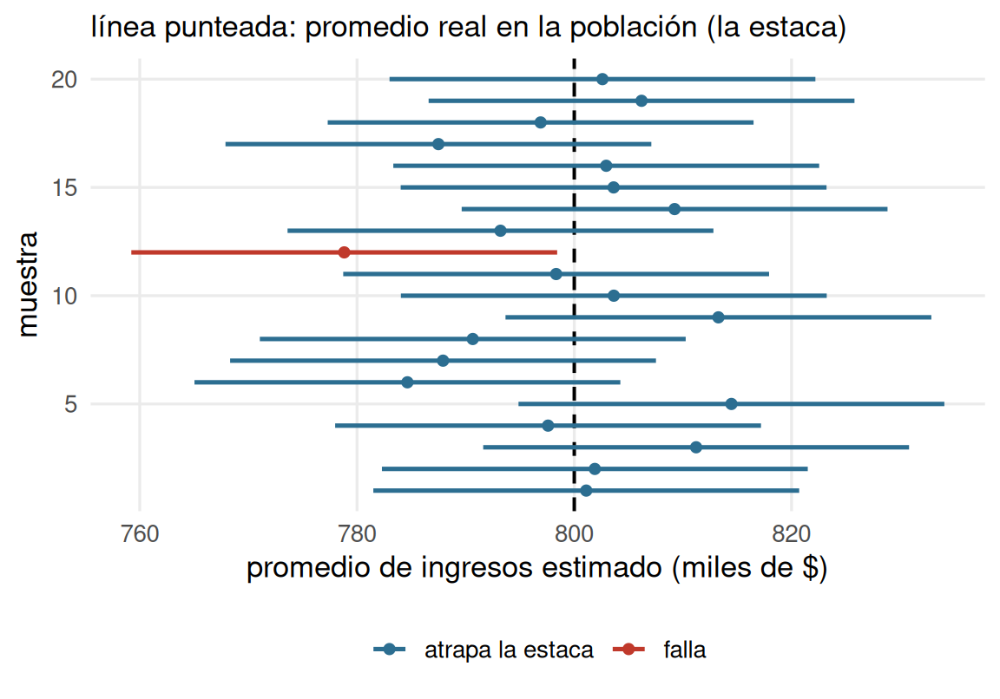

Estadística Correlacional
Inferencia, asociación, y reporte
Juan Carlos Castillo
Sociología FACSO - UChile
2do Sem 2026
correlacional.metodos-facso.org
Inferencia 3:
Intervalos de confianza y test de hipótesis (1)
2. Establecer nivel de confianza
Nuestro promedio muestral \(\bar{x}\) posee una distribución normal con una desviación estándar = SE (error estándar)
Esto nos permite estimar probabilidades basados en los valores de la curva normal (puntaje Z)

Y sabemos por la distribución normal que entre +/- 2 desviaciones estándar de la curva normal se encuentra el 95,44% de los casos:
Por lo tanto, para un 95% será algo menos que +/- 2ds … pero cuánto específicamente?
De percentil a puntaje Z
Recordemos que al calcular el puntaje Z, el resultado se expresa en desviaciones estándar de la curva normal, lo que puede ser transformado a percentiles.
Por lo tanto, se puede hacer la operación inversa -> a qué puntaje Z corresponde un determinado percentil

Cuestionario CASEN


Datos CASEN 2022

Vamos a generar una submuestra de 350 casos de CASEN para ilustrar de mejor manera el sentido del test de hipótesis
pacman::p_load(sjmisc, haven, dplyr, stargazer, interpretCI, kableExtra)
load("casen2022_inf2.Rdata")
options(scipen = 999) # para evitar notación en los ceros
set.seed(20) # para fijar el resultado aleatorio
casen_350 <- casen2022_inf %>% select(salario, sexo) %>% sample_n(350)
casen_350 <- na.omit(casen_350)
stargazer(as.data.frame(casen_350), type = "text")
======================================================
Statistic N Mean St. Dev. Min Max
------------------------------------------------------
salario 343 634,402.300 459,180.200 30,000 2,900,000
sexo 343 1.402 0.491 1 2
------------------------------------------------------Contraste de hipótesis y falsación

El verificar una hipótesis no hace que una teoría sea verdadera
Se puede intentar refutar una teoría (falsarla) mediante un contraejemplo o hipótesis contraria
Si no es posible refutar la hipótesis contraria, entonces la teoría queda aceptada provisionalmente

Estadística Correlacional
Inferencia, asociación, y reporte
Juan Carlos Castillo
Sociología FACSO - UChile
2do Sem 2026